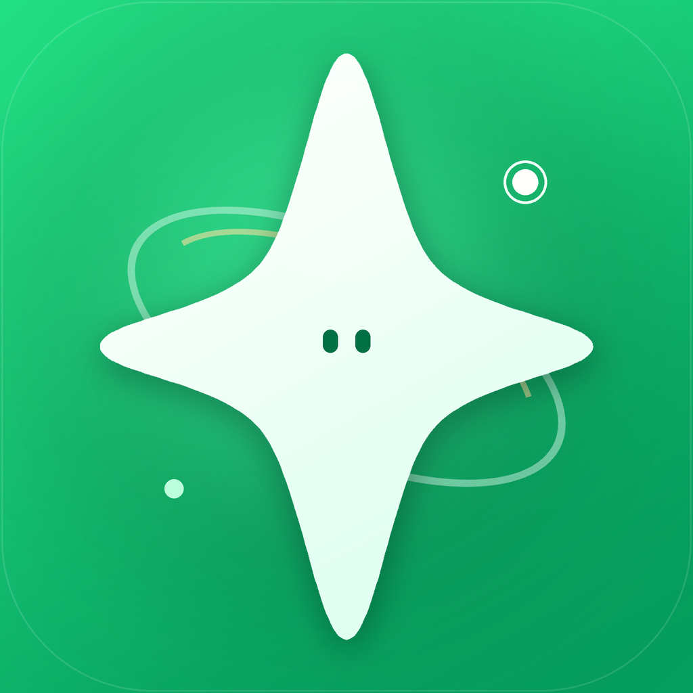

Conversations
消息应该在它该在的位置。
群聊、单聊、文件与通知遵循同一套层级。每一次新消息，都能在第一时间被看见。

星言星言 Star chat
A NEW WAY TO STAY CONNECTED
星言把聊天、文件与真实的人际关系重新带回电脑。
清楚、安静，也足够迅速。
Windows 10 / 11 · x64 · 桌面原生体验
可直接点击切换会话、筛选和发送消息
从一个清晰的会话，到一个真正属于你的桌面空间。
Conversations
群聊、单聊、文件与通知遵循同一套层级。每一次新消息，都能在第一时间被看见。
Files
图片、文件夹和大文件都以清晰的文件卡片呈现，上传过程全程可见。
Presence
在线、忙碌、离开与隐身都有一致的表达。好友知道你何时可以被打扰。
Desktop first
搜索、置顶、右键菜单、快捷回复、系统通知与托盘状态，都按照桌面习惯重新组织。
安装后即可使用桌面快捷方式、开始菜单入口和系统卸载项。
请始终从星言官方发布页下载。安装前可核对 GitHub Release 中的 SHA-256。
星言直接连接自己的服务。登录状态保存在本机，退出后清除会话凭据。你的消息属于你的账号，不属于第三方聊天云。
了解安全与发布流程 ↗